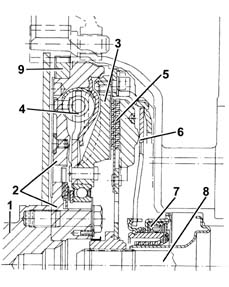

DESCRIPTION OF COMPONENTS
- Path
- Descriptions > 10 ENGINE > 1024 CRANKSHAFT AND FLYWHEEL > 1024B ENGINE FLYWHEEL > DESCRIPTION OF COMPONENTS
- Kind
- system description
- Applies to
- engines: 2.4 20V; all production periods
- Interactive page
- https://sloeber94.github.io/elrnDB-lThss/en/#/610288
Applies to: engines: 2.4 20V; all production periods
ENGINE FLYWHEEL
Specifications
Type
Twin mass DVA (twin flywheel shock absorber), one on the crankshaft and one on the gearbox main shaft with a flexible torsion damping system.
The resonance points which, on a conventional system are between 800 and 2200 rpm, have been moved towards lower rotation speeds, outside of the operating range.

- 1 - Crankshaft
- 2 - Mass in one piece with the crankshaft
- 3 - Mass in one piece with the gearbox main shaft
- 4 - Flexible torsion damping system
- 5 - Clutch plate
- 6 - Thrust spring
- 7 - Thrust bearing
- 8 - Gearbox main shaft
- 9 - Ring gear